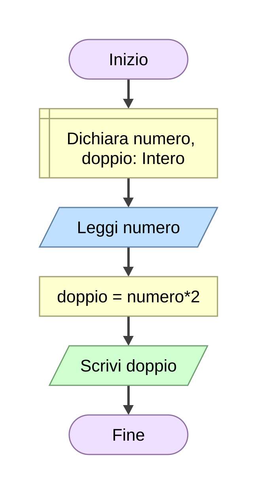

1. Acquisto di quaderni
Conosci il prezzo di un quaderno e la quantità acquistata. Calcola il costo totale.
Q03 · Quaderno di allenamento
Analizza problemi, completa algoritmi sequenziali e prevedi i risultati prima di costruire il diagramma in Flowgorithm.
Individua il compito principale.
Annota passaggi e risultato previsto.
Le attività diventano gradualmente più complete.
Confronta il risultato ottenuto con quello atteso.
Consulta i suggerimenti soltanto dopo avere provato.
Racconta il procedimento con parole tue.
| Ruolo | Forma | Esempio |
|---|---|---|
| Inizio e fine | Terminatore | INIZIO, FINE |
| Input e output | Parallelogramma | LEGGI base, SCRIVI area |
| Elaborazione | Rettangolo | area ← base * altezza |
| Direzione | Freccia | Indica il prossimo blocco |
Per ogni situazione individua obiettivo, input, output ed eventuali vincoli.
Conosci il prezzo di un quaderno e la quantità acquistata. Calcola il costo totale.
Conosci base e altezza positive. Calcola l'area.
Conosci ore e minuti. Calcola i minuti complessivi usando 60 minuti per ogni ora.
Conosci tre valori numerici. Calcola la loro media aritmetica.
prezzo * quantita.(a + b + c) / 3.Riscrivi le istruzioni nell'ordine corretto.
Riordina e spiega perché ogni dato deve essere disponibile prima del calcolo.
2 * (base + altezza).Spremuta: prendere gli strumenti → tagliare → spremere → versare → bere.
Perimetro: iniziare → leggere base → leggere altezza → calcolare → scrivere → terminare. Il calcolo usa base e altezza, quindi deve venire dopo i due input.
Problema: calcolare il prezzo finale conoscendo prezzo unitario e quantità.
Scrivi i dati da acquisire.
Scrivi il risultato richiesto.
Usa un'assegnazione.
Usa INIZIO, LEGGI, assegnazione, SCRIVI e FINE.
INIZIO
LEGGI prezzo
LEGGI quantita
totale ← prezzo * quantita
SCRIVI totale
FINECon prezzo 2,50 e quantità 4 l'output atteso è 10.
Leggi il diagramma dall'alto verso il basso e segui le frecce.

Il diagramma inizia e termina con un terminatore. Dichiara numero e doppio di tipo Intero. Il primo parallelogramma acquisisce numero; il rettangolo calcola doppio = numero * 2; il secondo parallelogramma mostra doppio. Con 7 l'output è 14.
a ← 5
b ← 3
a ← a + b
b ← a * 2Completa una riga dopo ogni assegnazione.
| Istruzione | Valore di a | Valore di b | Variabile modificata |
|---|---|---|---|
a ← 5 | … | non ancora definito | … |
b ← 3 | … | … | … |
a ← a + b | … | … | … |
b ← a * 2 | … | … | … |
prezzo ← 4
quantita ← 3
totale ← prezzo * quantita
prezzo ← prezzo + 1prezzo?totale cambia automaticamente?Prima sequenza: i valori finali sono a = 8 e b = 16. Ogni riga modifica soltanto la variabile a sinistra della freccia.
Seconda sequenza: prezzo passa da 4 a 5; quantita rimane 3 e totale rimane 12. Un'assegnazione già eseguita non viene ricalcolata automaticamente.
Valuta ogni espressione rispettando parentesi e precedenza. Scrivi almeno un passaggio intermedio.
7 + 3 * 2(7 + 3) * 220 - 8 / 218 / 3 + 417 mod 52 * (6 + 4) - 57 + 3 * 2 = 7 + 6 = 13(7 + 3) * 2 = 10 * 2 = 2020 - 8 / 2 = 20 - 4 = 1618 / 3 + 4 = 6 + 4 = 1017 mod 5 = 22 * (6 + 4) - 5 = 2 * 10 - 5 = 20 - 5 = 15Nei primi due esercizi le parentesi cambiano il risultato: 13 diventa 20.
Per ogni algoritmo individua l'errore, spiegalo e riscrivi la parte corretta.
area ← base * altezza
LEGGI base
LEGGI altezza
SCRIVI areaLEGGI prezzo
LEGGI quantita
SCRIVI totale
totale ← prezzo * quantitaLEGGI base
LEGGI altezza
perimetro ← base * altezza
SCRIVI perimetroLEGGI a
LEGGI b
LEGGI c
media ← a + b + c / 3
SCRIVI mediatotale ← prezzo * quantita; poi si scrive totale.2 * (base + altezza); base * altezza calcola l'area.(a + b + c) / 3, perché deve essere divisa l'intera somma.INIZIO
LEGGI numero
risultato ← numero * 3 + 2
SCRIVI risultato
FINEPrevedi l'output con numero = 4 e con numero = 10.
INIZIO
LEGGI ore
LEGGI minuti
minutiTotali ← ore * 60 + minuti
SCRIVI minutiTotali
FINEPrevedi l'output con 2 ore e 15 minuti, poi con 1 ora e 40 minuti.
Segui le istruzioni nell'ordine scritto.
Calcola a mano e annota l'output.
Riproduci il diagramma in Flowgorithm.
Spiega eventuali differenze.
Attività 1: con 4 l'output è 14; con 10 è 32.
Attività 2: gli output sono 135 minuti e 100 minuti.
Per ogni esercizio completa prima l'analisi, poi costruisci il diagramma.
base, altezza, area, perimetro, tutte di tipo Real.area ← base * altezza; perimetro ← 2 * (base + altezza).Scrivi gli output previsti, realizza il diagramma e verifica.
Prevedi il totale, costruisci il diagramma e controlla l'output.
a, b, c e media di tipo Real.Prevedi la media, realizza il diagramma e confronta il risultato.
totale ← prezzo * quantita. Con 4,50 e 3 il totale è 13,50.media ← (a + b + c) / 3. Con 6, 7 e 8 la media è 7.Problema: un laboratorio usa un materiale con costo orario fisso. Conosci ore, minuti aggiuntivi e costo per ogni ora. Calcola i minuti complessivi e il costo dell'intera durata, comprese le frazioni di ora.
Scrivi obiettivo ed eventuali vincoli indicati.
Separa dati ricevuti e risultati richiesti.
Indica nome e tipo di dato.
Usa la costante MINUTI_ORA = 60.
Mantieni l'ordine dichiarazioni → input → elaborazione → output.
Prova 2 ore, 30 minuti, 6 euro all'ora; poi 3 ore, 15 minuti, 8 euro all'ora.
Realizza il diagramma in Flowgorithm e usa entrambe le serie di dati.
Descrivi input, formule, ordine dei blocchi e output.
Input: ore, minuti, costoOrario. Output: minutiTotali, costoTotale.
INIZIO
DICHIARA ore, minuti, minutiTotali, MINUTI_ORA COME Integer
DICHIARA costoOrario, costoTotale COME Real
MINUTI_ORA ← 60
LEGGI ore
LEGGI minuti
LEGGI costoOrario
minutiTotali ← ore * MINUTI_ORA + minuti
costoTotale ← minutiTotali / MINUTI_ORA * costoOrario
SCRIVI minutiTotali
SCRIVI costoTotale
FINEPrima prova: 150 minuti e 15 euro. Seconda prova: 195 minuti e 26 euro.
Rispondi prima senza leggere, poi apri le indicazioni.
È una sequenza finita e ordinata di istruzioni chiare ed eseguibili per raggiungere un obiettivo.
L'input fornisce i dati, l'elaborazione li trasforma e l'output comunica il risultato.
È uno spazio con un nome che conserva temporaneamente un dato modificabile.
Significa calcolare o scegliere un valore e conservarlo nella variabile indicata a sinistra della freccia.
Ogni istruzione deve trovare già disponibili i dati che utilizza.
Si usano simboli con ruoli precisi, collegati da frecce che indicano l'ordine di esecuzione.
Si rispettano parentesi e precedenza, svolgendo un'operazione alla volta fino al risultato.
Per controllare il ragionamento e confrontare l'output ottenuto con un valore atteso.